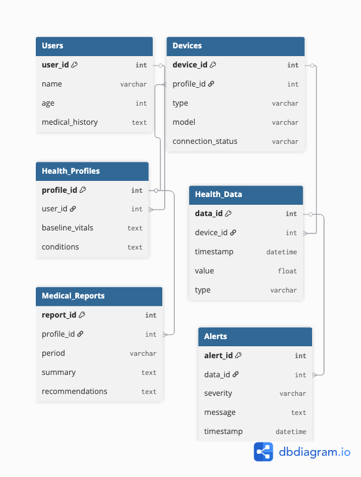

Aplikasi Mobile Monitoring Kesehatan Real-time dengan IoT
HealthTrack Pro adalah aplikasi mobile comprehensive untuk monitoring kesehatan yang mengintegrasikan perangkat IoT, analisis data real-time, dan prediksi kesehatan berbasis AI. Aplikasi ini memungkinkan pengguna untuk memantau berbagai parameter kesehatan secara kontinyu dengan teknologi sensor terdepan.
Dengan dukungan integrasi perangkat wearable seperti smartwatch, fitness tracker, dan medical devices, HealthTrack Pro memberikan gambaran kesehatan yang komprehensif. Sistem AI yang terintegrasi dapat menganalisis pola kesehatan dan memberikan rekomendasi serta peringatan dini untuk mencegah masalah kesehatan serius.



HealthTrack Pro mengimplementasikan standar keamanan tertinggi untuk melindungi data kesehatan pengguna:
Status: In Development
Timeline: Q1 2024 - Q3 2024
Current Progress: 65% Complete
Next Milestone: Beta Testing dengan partner healthcare (Q3 2024)
Expected Launch: Q4 2024